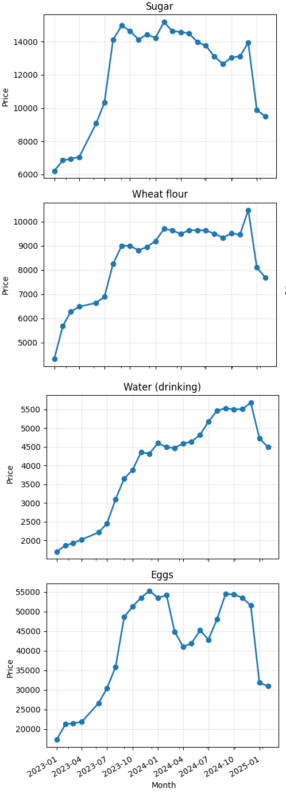

HIGHLIGHTS
- With a population of approximately 18 million, Syria’s markets plunged from January 2023 to June 2023 as the average MFI score collapsed from 7.85 to 4.48, revealing acute supply-chain breakdowns and a surge in “Very High Risk” zones.
- Amid an economy that has contracted by over 60 % since 2011, the MFI score partially recovered from 4.48 in June 2023 to 6.42 by April 2024—yet this rebound is based on only four markets, offering a fragile illusion of stability.
- Against hyperinflation exceeding 200 % in 2023, price scores crashed from 8.5 in January 2023 to 1.9 in June 2023 before rebounding to 8.1 by April 2024, underscoring persistent volatility and the urgent need for diversified sourcing.
- Despite ongoing conflict since 2011 that’s ravaged infrastructure, resilience held relatively strong (~9.1 → 8.0 → 8.1) and availability stayed near-perfect (~10 → 9.6 → 10), highlighting that basic supply routes can endure extreme stress.
- With competition thinning (from 9.7 to 8.1 between Jan 2023 and Apr 2024), service scores stagnated at dangerously low levels (~6.5 → 4.2 → 4.2) and infrastructure ratings slid (~9.2 → 7.0), flagging monopolistic risks and the critical need for targeted investments to maintain customer trust."
Commodities
- It’s brutal that global oil markets remain volatile, yet retail gas prices in Syrian markets skyrocketed by 718%, climbing from 22 000 SYP on 15 April 2024 to 180 000 SYP on 15 February 2025, threatening to cripple transport networks and humanitarian aid unless alternative logistics solutions are deployed.
- Given diesel powers generators and irrigation pumps across the country, its retail cost jumped 523%, surging from 2 007 SYP on 15 April 2024 to 12 500 SYP on 15 February 2025, risking severe disruption to farming operations and energy access—and forcing urgent diversification toward renewables.
- Considering bread is the backbone of Syrian diets, bakery prices surged 424%, rising from 554 SYP on 15 April 2024 to 2 900 SYP on 15 February 2025, shoving millions deeper into food insecurity and demanding an immediate scale-up of social safety nets.
- Since everyday commuting hinges on public buses, fares jumped 200%, from 1 000 SYP on 15 April 2024 to 3 000 SYP on 15 February 2025, slamming mobility for workers and displaced families—necessitating investment in affordable transport alternatives.
- With lentils serving as a primary protein source, prices actually dropped 40%, falling from 22 822 SYP on 15 April 2024 to 13 667 SYP on 15 February 2025, which might sound welcome but instead devastates local farmers’ livelihoods and calls for urgent support to stabilize agricultural incomes."
BBC Comments
- Chronic fuel shortages, spotlighted in BBC dispatches from Damascus and Aleppo, have led to multi-hour queues and black-market markups of up to 300% above official pump prices, amplifying costs for transport, agriculture (through irrigation) and hospital generators—and threatening to stall humanitarian operations.
- When the government trimmed its bread subsidy in late 2024, BBC correspondents reported spontaneous protests in urban centers; with bakery prices already up over 400%, any further rollback threatens social unrest and deeper food poverty."
- United Nations relief agencies, as frequently covered by the BBC, warn that over 60% of Syrians are now food-insecure, with real wages eroded so drastically that even staples like rice or sugar consume half a family’s daily income—heightening malnutrition risks.

Exchange Rates
- It is well known that Syria has been under crippling international sanctions since 2011, and from 02 January 2012 to 27 December 2012 the official exchange rate of the Syrian pound depreciated from SYP 54.00 to SYP 77.04 per USD—a 42.7 % decline—exacerbating import costs and fueling runaway inflation and severe shortages.
- When the Syrian civil war reached peak chaos in 2013, the pound plunged from SYP 77.21 to SYP 141.35 per USD between 02 January 2013 and 30 December 2013—an 83.1 % dive—freezing formal banking channels, spurring capital flight, and eroding liquidity.
- As Syria’s oil output nosedived in the mid-2010s, the pound rocketed from SYP 219.65 to SYP 515.00 per USD—a 134.5 % surge—between 01 January 2016 and 30 December 2016, contributing to hyperinflation as government revenues collapsed and purchasing power was crushed.
- During the COVID-19 pandemic in 2020, remittance inflows and supply chains suffered, and from 01 January 2020 to 31 December 2020 the official rate tumbled from SYP 435.00 to SYP 1256.00 per USD—a 188.7 % collapse—heightening humanitarian stress and healthcare cost pressures.
- Following renewed sanctions and domestic turmoil in 2023, the Syrian pound imploded from SYP 2511.00 to SYP 13000.00 per USD between 01 January 2023 and 31 December 2023—a 417.7 % depreciation—causing black-market margins to explode, undermining trust in official rates, and triggering chronic cash shortages."
Situation Update
Sharp Increase in Parallel Market Exchange Rates Observed from February 2023 to December 2024
- The parallel market exchange rate rose sharply from approximately 7,300 units on 6 February 2023 to around 13,000 units by 30 July 2023, marking a 78.1% increase over six months.
- Between 31 July and 7 August 2023, the parallel market rate fluctuated significantly, with values ranging from 8,645 units to 14,500 units, highlighting increased market volatility.
- From August to October 2023, the parallel market rate stabilized somewhat, averaging around 13,500 to 14,000 units, before resuming an upward trajectory in November 2023.
- By early May 2024, the parallel market rate had risen to approximately 17,500 units, representing a 34.6% increase compared to the average rate of 13,000 units observed in August 2023.
- A rapid escalation occurred in late November and early December 2024, with the parallel market rate reaching as high as 25,928 units on 2 December 2024, a 48.2% increase from the early May 2024 rate.
- The official exchange rate remained stable at 13,005 units from late March 2024 onward, despite the parallel market rate's continued volatility and sharp increases.
- As of 9 December 2024, the parallel market rate had sharply declined to approximately 10,500 to 11,866 units, indicating a sudden correction following the peak observed earlier in the month."